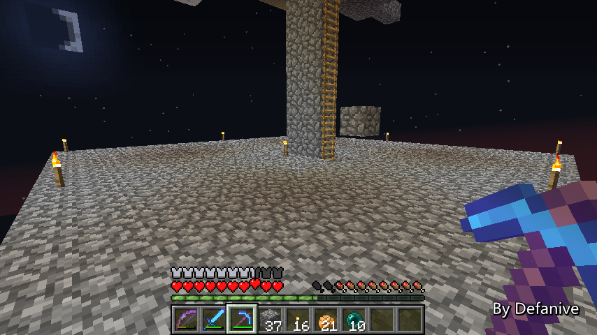
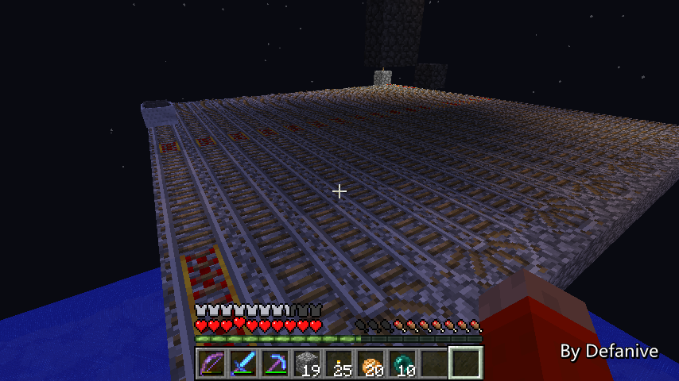

首页
上一页
272
273
274
275
276
277
277
278
279
280
281
282
下一页
末页
defanive2
无尽黑夜
14
训练场的初步计划是内部空间17x17x4
一个玩家的话会是挺大的范围了
应该可以跑来跑去躲避怪物
位置选在了刷怪塔的右侧，物品分离器的上方
——来自 MCLive
23239楼
2013-10-05 13:52
defanive2
无尽黑夜
14
考虑了一下之后，我决定更改训练场的位置
由于训练场内肯定会遭到苦力怕的破坏
所以说里面肯定不会设置有光源
这样的话，训练场如果离玩家太远
那么怪物就有可能刷在训练场里而不是在刷怪塔里
——来自 MCLive
23241楼
2013-10-05 13:55
defanive2
无尽黑夜
14
花了好一会才拆掉之前的框架
我决定把训练场建到刷怪塔的正下方
这样的话整个训练场都会在玩家半径24格范围内
这样的话即使不需要灯光也可以保证不刷怪
——来自 MCLive
23242楼
2013-10-05 14:04
defanive2
无尽黑夜
14
整个训练场大概会分成3层的结构
第一层内部空间是2格高，用于把怪物输送到各个出怪口
第二层就是训练场，玩家进行训练杀怪的地方
第三层是矿车轨道层，用于收集玩家死亡之后掉落的装备
——来自 MCLive
23243楼
2013-10-05 14:09
defanive2
无尽黑夜
14
建好最下面的矿车收集层了
需要回家一次取铁轨铺
目测需要5组左右
——来自 MCLive

23246楼
2013-10-05 14:18
defanive2
无尽黑夜
14
终于完成铁轨的铺设
——来自 MCLive
23249楼
2013-10-05 14:32
defanive2
无尽黑夜
14
运行了一圈之后正常回来，没什么问题
——来自 MCLive

23250楼
2013-10-05 14:34
defanive2
无尽黑夜
14
接下来就要拿出黑曜石开始造训练室了
由于有苦力怕，因此训练场必须要是防爆材料做成的
也就只有黑曜石这个选择了
PS 计算了一下，需要消耗850块黑曜石左右
也就是14组不到
——来自 MCLive
23252楼
2013-10-05 14:36
defanive2
无尽黑夜
14
铺好训练场的地板
——来自 MCLive
23256楼
2013-10-05 14:40
defanive2
无尽黑夜
14
天花板也建好了，一共出手9组黑曜石
——来自 MCLive
23258楼
2013-10-05 14:47
defanive2
无尽黑夜
14
四周外墙也建好了，不过室内非常的暗
打算的解决方法是，在天花板用一些末影箱
并且在末影箱上面放上萤石
由于末影箱同样可以防苦力怕的爆炸
但是又是透明方块，所以可以做到不错的光照效果
——来自 MCLive
23261楼
2013-10-05 14:57
defanive2
无尽黑夜
14
在训练场的一角做一个出入口
以后会把火把换成黑曜石
这样玩家只能够用小黑眼飞进去
但是玩家和怪物都无法出来
——来自 MCLive
23264楼
2013-10-05 15:00
defanive2
无尽黑夜
14
矿车收集到的玩家掉落的物品会被传送到这个箱子里
这样玩家在完成一次训练之后就可以把自己的物品拿回
= =
——来自 MCLive
23265楼
2013-10-05 15:05
defanive2
无尽黑夜
14
四个火把正上方将会是刷怪的地方
怪物会从上面掉落下来
——来自 MCLive
23267楼
2013-10-05 15:09
defanive2
无尽黑夜
14
接下来下一步就要开始做怪物的转移了
在生存者模式下，所有的怪物都不会进入怪物分离器
而是会进入到一个随机分配的平台
将怪物随机分配到4个刷怪点
——来自 MCLive
23269楼
2013-10-05 15:12
defanive2
无尽黑夜
14
一个非常简单的切换系统
OFF情况下，两边的活塞关闭，下面的活塞开启
这样怪物只能从柱子下去
——来自 MCLive
23273楼
2013-10-05 15:21
defanive2
无尽黑夜
14
ON的情况下，两边的活塞开启
下方的活塞关闭
这样怪物就会顺着水流往左走
——来自 MCLive
23275楼
2013-10-05 15:22
defanive2
无尽黑夜
14
接下来继续把水流延伸
然后往下的出口就会做成随机分配的系统
——来自 MCLive
23279楼
2013-10-05 15:36
defanive2
无尽黑夜
14
随机系统在这里用一个非常简单的做法
怪物掉下来之后会被冲到一个角落
虽然说看起来往前方冲的几率似乎大一点
但是当怪物数量非常多的时候
互相拥挤基本上也会导致4个出口怪物数量非常平均
——来自 MCLive
23285楼
2013-10-05 15:49
defanive2
无尽黑夜
14
接下来就是要把控制面板的信号引上来
用来控制是否把怪物转移到右侧
很简单的一个信号上传+非门即可
——来自 MCLive
23287楼
2013-10-05 16:00
defanive2
无尽黑夜
14
接下来我们切换到生存者模式
打开刷怪塔总开关测试一下吧
——来自 MCLive
23289楼
2013-10-05 16:12
defanive2
无尽黑夜
14
可以看到水流装置正常开启
并且怪物被分到各个不同的出口
——来自 MCLive
23290楼
2013-10-05 16:13
defanive2
无尽黑夜
14
从下面可以看到4个出口怪物数量都很接近
基本上转移怪物和随机分配都已经大体完成了
——来自 MCLive
23291楼
2013-10-05 16:15
defanive2
无尽黑夜
14
今天已经比较晚了，直播大概到这里就会结束了
生存者模式还是相对比较大的工程的
今天只是完成了大框架的一小部分
出怪口的怪物运输没有做，还有其他一些电路也没做
因此这个工程估计会继续一段时间
不过不管怎么说这个工程还是进行得不错的
大家下次直播再见啦！
——来自 MCLive
23292楼
2013-10-05 16:20
defanive2
无尽黑夜
14
今天已经玩了不少的MC了
我们来继续直播一下吧！
To survive！
——来自 MCLive
23315楼
2013-10-06 11:09
defanive2
无尽黑夜
14
晚上玩了挺久的MC了，都在进行刷怪塔生存者模式的建造
顺便说一下，1.4.6更新后silk touch可以放到剪刀上了
——来自 MCLive
23317楼
2013-10-06 11:20
defanive2
无尽黑夜
14
silk touch的剪刀除了剪蜘蛛网以外
由于剪刀破坏绝大部分方块都是不消耗耐久的
因此可以用做无限silk touch的工具
例如可以用silk touch剪刀采集草地，并且不消耗耐久
PS 但是效率肯定就没有铲子快了
——来自 MCLive
23319楼
2013-10-06 11:23
defanive2
无尽黑夜
14
采集草方块其实并不是很有用
毕竟需求量很高，但是剪刀速度很慢
处理玻璃的时候这种silk touch剪刀就很有用了
可以回收放错的玻璃，而且无限耐久
——来自 MCLive
23322楼
2013-10-06 11:26
defanive2
无尽黑夜
14
而且采集萤石也非常好用
总之是个不错的东西
如果有这个条件的话，造一把silk touch的剪刀绝对是物超所值的
——来自 MCLive
23324楼
2013-10-06 11:28
defanive2
无尽黑夜
14
在家里烧玻璃的时候顺便修改了一下活动工作台的电路
把延迟降低了2tick
踩下踏板之后2.5tick后就完成了方块的切换
PS 非之前所发的瞬间方块交换电路
那个电路具体再开帖子讲
——来自 MCLive
23326楼
2013-10-06 11:32
首页
上一页
272
273
274
275
276
277
277
278
279
280
281
282
下一页
末页